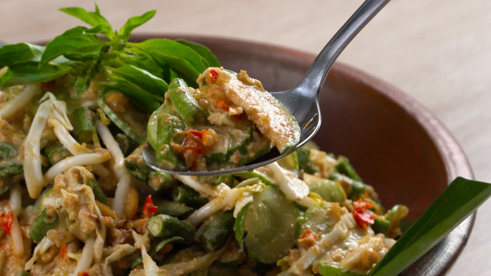

Bagaimana cara membuat karedok

Bahan bahan untuk membuat karedok:
- 250 gr kacang panjang50 gr daging sapi giling
- 250 gr mentimun
- 150 gr tauge, bersihkan akarnya
- 50 gr daun kemangi, petiki daunnya saja
Bumbu-bumbu :
- 5 buah cabe merah keriting
- 4 siung bawang putih
- 3 buah cabe rawit
- 8 cm kencur
- 1-2 sdt garam
- 150 gr gula merah, sisir
- 200 gr kacang tanah sangrai
- 6 sdm air asam jawa
- 50 ml air matang
Pelengkap:
- Emping goreng
- Bawang goreng
Cara Memasak:
- Siangi kacang panjang. Iris melintang kacang panjang dan kol ukuran ½ cm. Belah memanjang timun menjadi 4 bagian , lalu iris melintang 1/2 cm
- Bumbu: Ulek hingga halus cabai merah, bawang putih, cabai rawit, kencur, garam, terasi, tambahkan gula merah, gerus hingga gula merah tercampur rata,lalu tambahkan kacang tanah, gerus kembali hingga halus. Masukkan air asam jawa, sambil di ulek hingga rata.
- Pindahkan sambal ke dalam mangkuk, tambahkan air matang aduk hingga rata hingga menjadi saus yang kental.
- Tambahkan sayuran potong ke dalam mangkuk, aduk hingga seluruh sayur terlumuri oleh bumbu, pindahkan ke piring saji. Sajikan segera.
Resep by https://endeus.tv/resep/karedok